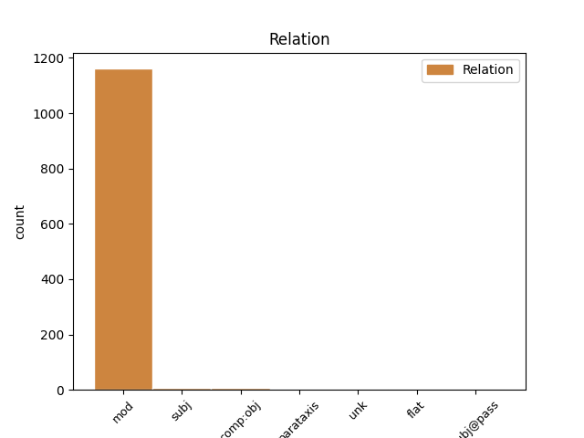
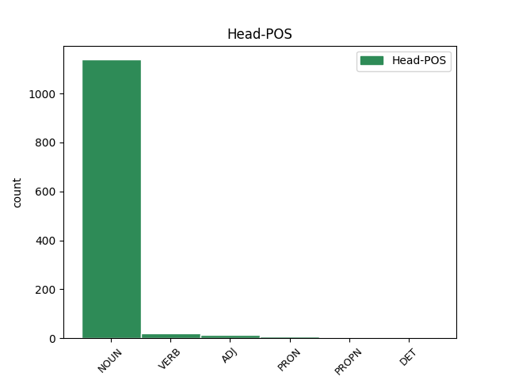
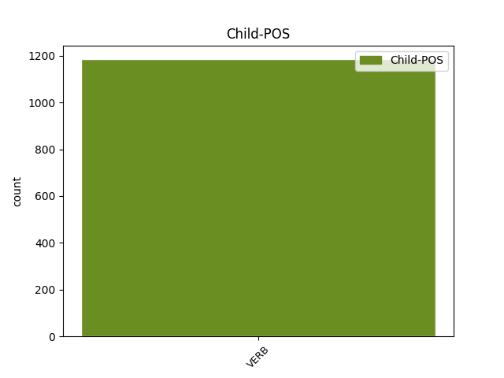

Distribution of features within this leaf



Agreement Rules sorted by frequency.
- When the dependent token is the modifer(mod) of the head token, and the head token is NOUN and the dependent token is VERB.
1 Ginčai _ _ _ _ 0 _ _ _
2 dėl _ _ _ _ 0 _ _ _
3 šio _ _ _ _ 0 _ _ _
4 reglamento _ _ _ _ 0 _ _ _
5 taikymo _ _ _ _ 0 _ _ _
6 nagrinėjami _ _ _ _ 0 _ _ _
7 įstatymų _ _ _ _ 0 _ _ _
8 nustatyta nustatyti VERB vksm.dlv.neveik.būt.mot.vns.Įn. Case=Ins|Definite=Ind|Gender=Fem|Number=Sing|Polarity=Pos|Tense=Past|VerbForm=Part|Voice=Pass 9 mod _ _
9 tvarka tvarka NOUN dkt.mot.vns.Įn. Case=Ins|Gender=Fem|Number=Sing 0 _ _ _
10 . _ _ _ _ 0 _ _ _
1 Programos _ _ _ _ 0 _ _ _
2 vykdymo _ _ _ _ 0 _ _ _
3 rezultato _ _ _ _ 0 _ _ _
4 vertinimo _ _ _ _ 0 _ _ _
5 kriterijus _ _ _ _ 0 _ _ _
6 yra _ _ _ _ 0 _ _ _
7 padidėjęs padidėti VERB vksm.dlv.veik.būt-k.vyr.vns.V. Aspect=Perf|Case=Nom|Definite=Ind|Gender=Masc|Number=Sing|Polarity=Pos|Tense=Past|VerbForm=Part|Voice=Act 24 mod _ _
8 duomenų _ _ _ _ 0 _ _ _
9 valdytojų _ _ _ _ 0 _ _ _
10 , _ _ _ _ 0 _ _ _
11 siekiančių _ _ _ _ 0 _ _ _
12 tinkamai _ _ _ _ 0 _ _ _
13 įgyvendinti _ _ _ _ 0 _ _ _
14 duomenų _ _ _ _ 0 _ _ _
15 apsaugos _ _ _ _ 0 _ _ _
16 reikalavimus _ _ _ _ 0 _ _ _
17 , _ _ _ _ 0 _ _ _
18 kreipimųsi _ _ _ _ 0 _ _ _
19 į _ _ _ _ 0 _ _ _
20 Inspekciją _ _ _ _ 0 _ _ _
21 skaičius _ _ _ _ 0 _ _ _
22 ( _ _ _ _ 0 _ _ _
23 padidėjimas _ _ _ _ 0 _ _ _
24 skaičiuojamas skaičiuoti VERB vksm.dlv.neveik.es.vyr.vns.V. Case=Nom|Definite=Ind|Gender=Masc|Number=Sing|Polarity=Pos|Tense=Pres|VerbForm=Part|Voice=Pass 0 _ _ _
25 procentais _ _ _ _ 0 _ _ _
26 ir _ _ _ _ 0 _ _ _
27 lyginamas _ _ _ _ 0 _ _ _
28 su _ _ _ _ 0 _ _ _
29 2005 _ _ _ _ 0 _ _ _
30 m _ _ _ _ 0 _ _ _
31 . _ _ _ _ 0 _ _ _
32 ) _ _ _ _ 0 _ _ _
33 . _ _ _ _ 0 _ _ _
1 Skanesnis _ _ _ _ 0 _ _ _
2 atrodė _ _ _ _ 0 _ _ _
3 importinis importinis ADJ bdv.nelygin.vyr.vns.V. Case=Nom|Definite=Ind|Degree=Pos|Gender=Masc|Number=Sing 0 _ _ _
4 – _ _ _ _ 0 _ _ _
5 gražiai _ _ _ _ 0 _ _ _
6 supakuotas supakuoti VERB vksm.dlv.neveik.būt.vyr.vns.V. Case=Nom|Definite=Ind|Gender=Masc|Number=Sing|Polarity=Pos|Tense=Past|VerbForm=Part|Voice=Pass 3 mod _ SpaceAfter=No
7 , _ _ _ _ 0 _ _ _
8 blizgančiomis _ _ _ _ 0 _ _ _
9 etiketėmis _ _ _ _ 0 _ _ _
10 . _ _ _ _ 0 _ _ _
1 Arba _ _ _ _ 0 _ _ _
2 atvirkščiai _ _ _ _ 0 _ _ _
3 – _ _ _ _ 0 _ _ _
4 jie _ _ _ _ 0 _ _ _
5 nesidomėjo _ _ _ _ 0 _ _ _
6 manimi _ _ _ _ 0 _ _ _
7 ir _ _ _ _ 0 _ _ _
8 aš _ _ _ _ 0 _ _ _
9 jų jis PRON įv.vyr.dgs.K. Case=Gen|Definite=Ind|Gender=Masc|Number=Plur|Person=3|PronType=Prs 0 _ _ _
10 , _ _ _ _ 0 _ _ _
11 netgi _ _ _ _ 0 _ _ _
12 esančių būti VERB vksm.dlv.veik.es.vyr.dgs.K. Case=Gen|Definite=Ind|Gender=Masc|Number=Plur|Polarity=Pos|Tense=Pres|VerbForm=Part|Voice=Act 9 mod _ _
13 visai _ _ _ _ 0 _ _ _
14 šalia _ _ _ _ 0 _ _ _
15 , _ _ _ _ 0 _ _ _
16 nemačiau _ _ _ _ 0 _ _ _
17 , _ _ _ _ 0 _ _ _
18 negalėjau _ _ _ _ 0 _ _ _
19 paliesti _ _ _ _ 0 _ _ _
20 . _ _ _ _ 0 _ _ _
1 Smulkiojo _ _ _ _ 0 _ _ _
2 ir _ _ _ _ 0 _ _ _
3 vidutinio _ _ _ _ 0 _ _ _
4 verslo _ _ _ _ 0 _ _ _
5 subjektams _ _ _ _ 0 _ _ _
6 gali _ _ _ _ 0 _ _ _
7 būti _ _ _ _ 0 _ _ _
8 taikomos _ _ _ _ 0 _ _ _
9 šios _ _ _ _ 0 _ _ _
10 valstybės _ _ _ _ 0 _ _ _
11 paramos _ _ _ _ 0 _ _ _
12 formos _ _ _ _ 0 _ _ _
13 : _ _ _ _ 0 _ _ _
14 1 _ _ _ _ 0 _ _ _
15 ) _ _ _ _ 0 _ _ _
16 mokesčių _ _ _ _ 0 _ _ _
17 lengvatos _ _ _ _ 0 _ _ _
18 ( _ _ _ _ 0 _ _ _
19 jei _ _ _ _ 0 _ _ _
20 jos _ _ _ _ 0 _ _ _
21 nustatytos _ _ _ _ 0 _ _ _
22 įstatymų _ _ _ _ 0 _ _ _
23 ) _ _ _ _ 0 _ _ _
24 , _ _ _ _ 0 _ _ _
25 rinkliavų _ _ _ _ 0 _ _ _
26 lengvatos _ _ _ _ 0 _ _ _
27 ; _ _ _ _ 0 _ _ _
28 2 _ _ _ _ 0 _ _ _
29 ) _ _ _ _ 0 _ _ _
30 teisės _ _ _ _ 0 _ _ _
31 aktų _ _ _ _ 0 _ _ _
32 nustatyta _ _ _ _ 0 _ _ _
33 tvarka _ _ _ _ 0 _ _ _
34 finansinė _ _ _ _ 0 _ _ _
35 parama _ _ _ _ 0 _ _ _
36 : _ _ _ _ 0 _ _ _
37 lengvatinių _ _ _ _ 0 _ _ _
38 paskolų _ _ _ _ 0 _ _ _
39 teikimas _ _ _ _ 0 _ _ _
40 , _ _ _ _ 0 _ _ _
41 labai _ _ _ _ 0 _ _ _
42 mažų _ _ _ _ 0 _ _ _
43 paskolų _ _ _ _ 0 _ _ _
44 teikimas _ _ _ _ 0 _ _ _
45 , _ _ _ _ 0 _ _ _
46 dalinis _ _ _ _ 0 _ _ _
47 ar _ _ _ _ 0 _ _ _
48 visiškas _ _ _ _ 0 _ _ _
49 palūkanų _ _ _ _ 0 _ _ _
50 dengimas _ _ _ _ 0 _ _ _
51 , _ _ _ _ 0 _ _ _
52 garantijų _ _ _ _ 0 _ _ _
53 teikimas _ _ _ _ 0 _ _ _
54 , _ _ _ _ 0 _ _ _
55 kreditų _ _ _ _ 0 _ _ _
56 draudimas _ _ _ _ 0 _ _ _
57 , _ _ _ _ 0 _ _ _
58 rizikos _ _ _ _ 0 _ _ _
59 kapitalo _ _ _ _ 0 _ _ _
60 investavimas _ _ _ _ 0 _ _ _
61 , _ _ _ _ 0 _ _ _
62 tam _ _ _ _ 0 _ _ _
63 tikrų _ _ _ _ 0 _ _ _
64 išlaidų _ _ _ _ 0 _ _ _
65 ( _ _ _ _ 0 _ _ _
66 steigimo _ _ _ _ 0 _ _ _
67 , _ _ _ _ 0 _ _ _
68 tyrimų _ _ _ _ 0 _ _ _
69 , _ _ _ _ 0 _ _ _
70 garantijų _ _ _ _ 0 _ _ _
71 mokesčių _ _ _ _ 0 _ _ _
72 , _ _ _ _ 0 _ _ _
73 kreditų _ _ _ _ 0 _ _ _
74 draudimo _ _ _ _ 0 _ _ _
75 įmokų _ _ _ _ 0 _ _ _
76 , _ _ _ _ 0 _ _ _
77 sertifikavimo _ _ _ _ 0 _ _ _
78 ( _ _ _ _ 0 _ _ _
79 registravimo _ _ _ _ 0 _ _ _
80 ) _ _ _ _ 0 _ _ _
81 , _ _ _ _ 0 _ _ _
82 atitikties _ _ _ _ 0 _ _ _
83 įvertinimo _ _ _ _ 0 _ _ _
84 ir _ _ _ _ 0 _ _ _
85 kitų _ _ _ _ 0 _ _ _
86 ) _ _ _ _ 0 _ _ _
87 kompensavimas _ _ _ _ 0 _ _ _
88 , _ _ _ _ 0 _ _ _
89 subsidijos _ _ _ _ 0 _ _ _
90 darbo _ _ _ _ 0 _ _ _
91 vietoms _ _ _ _ 0 _ _ _
92 kurti _ _ _ _ 0 _ _ _
93 ; _ _ _ _ 0 _ _ _
94 3 _ _ _ _ 0 _ _ _
95 ) _ _ _ _ 0 _ _ _
96 viešųjų _ _ _ _ 0 _ _ _
97 paslaugų _ _ _ _ 0 _ _ _
98 verslui _ _ _ _ 0 _ _ _
99 teikimas _ _ _ _ 0 _ _ _
100 verslo _ _ _ _ 0 _ _ _
101 inkubatoriuose _ _ _ _ 0 _ _ _
102 , _ _ _ _ 0 _ _ _
103 verslo _ _ _ _ 0 _ _ _
104 informacijos _ _ _ _ 0 _ _ _
105 centruose _ _ _ _ 0 _ _ _
106 , _ _ _ _ 0 _ _ _
107 mokslo _ _ _ _ 0 _ _ _
108 ir _ _ _ _ 0 _ _ _
109 technologijų _ _ _ _ 0 _ _ _
110 parkuose _ _ _ _ 0 _ _ _
111 ir _ _ _ _ 0 _ _ _
112 kituose _ _ _ _ 0 _ _ _
113 juridiniuose _ _ _ _ 0 _ _ _
114 asmenyse _ _ _ _ 0 _ _ _
115 , _ _ _ _ 0 _ _ _
116 kurių _ _ _ _ 0 _ _ _
117 steigimo _ _ _ _ 0 _ _ _
118 dokumentuose _ _ _ _ 0 _ _ _
119 nustatytas _ _ _ _ 0 _ _ _
120 šių _ _ _ _ 0 _ _ _
121 paslaugų _ _ _ _ 0 _ _ _
122 teikimas _ _ _ _ 0 _ _ _
123 ; _ _ _ _ 0 _ _ _
124 3 _ _ _ _ 0 _ _ _
125 punkto _ _ _ _ 0 _ _ _
126 redakcija _ _ _ _ 0 _ _ _
127 nuo _ _ _ _ 0 _ _ _
128 2011 _ _ _ _ 0 _ _ _
129 m _ _ _ _ 0 _ _ _
130 . _ _ _ _ 0 _ _ _
131 sausio _ _ _ _ 0 _ _ _
132 1 _ _ _ _ 0 _ _ _
133 d _ _ _ _ 0 _ _ _
134 . _ _ _ _ 0 _ _ _
135 : _ _ _ _ 0 _ _ _
136 3 _ _ _ _ 0 _ _ _
137 ) _ _ _ _ 0 _ _ _
138 viešųjų _ _ _ _ 0 _ _ _
139 paslaugų _ _ _ _ 0 _ _ _
140 verslui _ _ _ _ 0 _ _ _
141 teikimas _ _ _ _ 0 _ _ _
142 viešojoje _ _ _ _ 0 _ _ _
143 įstaigoje _ _ _ _ 0 _ _ _
144 „ _ _ _ _ 0 _ _ _
145 Eksportuojančioji eksportuoti VERB vksm.dlv.veik.es.įvardž.mot.vns.V. Case=Nom|Definite=Def|Gender=Fem|Number=Sing|Polarity=Pos|Tense=Pres|VerbForm=Part|Voice=Act 146 mod _ _
146 Lietuva Lietuva PROPN dkt.tikr.mot.vns.V. Case=Nom|Gender=Fem|Number=Sing 0 _ _ _
147 “ _ _ _ _ 0 _ _ _
148 , _ _ _ _ 0 _ _ _
149 verslo _ _ _ _ 0 _ _ _
150 inkubatoriuose _ _ _ _ 0 _ _ _
151 , _ _ _ _ 0 _ _ _
152 verslo _ _ _ _ 0 _ _ _
153 informacijos _ _ _ _ 0 _ _ _
154 centruose _ _ _ _ 0 _ _ _
155 , _ _ _ _ 0 _ _ _
156 mokslo _ _ _ _ 0 _ _ _
157 ir _ _ _ _ 0 _ _ _
158 technologijų _ _ _ _ 0 _ _ _
159 parkuose _ _ _ _ 0 _ _ _
160 ir _ _ _ _ 0 _ _ _
161 kituose _ _ _ _ 0 _ _ _
162 juridiniuose _ _ _ _ 0 _ _ _
163 asmenyse _ _ _ _ 0 _ _ _
164 , _ _ _ _ 0 _ _ _
165 kurių _ _ _ _ 0 _ _ _
166 steigimo _ _ _ _ 0 _ _ _
167 dokumentuose _ _ _ _ 0 _ _ _
168 nustatytas _ _ _ _ 0 _ _ _
169 šių _ _ _ _ 0 _ _ _
170 paslaugų _ _ _ _ 0 _ _ _
171 teikimas _ _ _ _ 0 _ _ _
172 ; _ _ _ _ 0 _ _ _
173 4 _ _ _ _ 0 _ _ _
174 ) _ _ _ _ 0 _ _ _
175 Vyriausybės _ _ _ _ 0 _ _ _
176 ar _ _ _ _ 0 _ _ _
177 savivaldybių _ _ _ _ 0 _ _ _
178 nustatytos _ _ _ _ 0 _ _ _
179 kitos _ _ _ _ 0 _ _ _
180 paramos _ _ _ _ 0 _ _ _
181 formos _ _ _ _ 0 _ _ _
182 . _ _ _ _ 0 _ _ _
1 Kadangi _ _ _ _ 0 _ _ _
2 griežtos _ _ _ _ 0 _ _ _
3 ribos _ _ _ _ 0 _ _ _
4 tarp _ _ _ _ 0 _ _ _
5 skirtingų _ _ _ _ 0 _ _ _
6 žanrų _ _ _ _ 0 _ _ _
7 neįmanomos _ _ _ _ 0 _ _ _
8 , _ _ _ _ 0 _ _ _
9 pristatomos pristatyti VERB vksm.dlv.neveik.es.mot.dgs.V. Case=Nom|Definite=Ind|Gender=Fem|Number=Plur|Polarity=Pos|Tense=Pres|VerbForm=Part|Voice=Pass 0 _ _ _
10 labai _ _ _ _ 0 _ _ _
11 naudingos _ _ _ _ 0 _ _ _
12 priešžanrio _ _ _ _ 0 _ _ _
13 ir _ _ _ _ 0 _ _ _
14 požanrio _ _ _ _ 0 _ _ _
15 kategorijos _ _ _ _ 0 _ _ _
16 , _ _ _ _ 0 _ _ _
17 t. _ _ _ _ 0 _ _ _
18 y. _ _ _ _ 0 _ _ _
19 nustatomi nustatyti VERB vksm.dlv.neveik.es.vyr.dgs.V. Case=Nom|Definite=Ind|Gender=Masc|Number=Plur|Polarity=Pos|Tense=Pres|VerbForm=Part|Voice=Pass 9 parataxis _ _
20 labai _ _ _ _ 0 _ _ _
21 svarbūs _ _ _ _ 0 _ _ _
22 hierarchiniai _ _ _ _ 0 _ _ _
23 klasifikavimo _ _ _ _ 0 _ _ _
24 lygmenys _ _ _ _ 0 _ _ _
25 . _ _ _ _ 0 _ _ _
1 Dažnai _ _ _ _ 0 _ _ _
2 teismų _ _ _ _ 0 _ _ _
3 akiratin _ _ _ _ 0 _ _ _
4 patenka _ _ _ _ 0 _ _ _
5 nepilnamečiai _ _ _ _ 0 _ _ _
6 , _ _ _ _ 0 _ _ _
7 kurie _ _ _ _ 0 _ _ _
8 pripažįstami pripažinti VERB vksm.dlv.neveik.es.vyr.dgs.V. Case=Nom|Definite=Ind|Gender=Masc|Number=Plur|Polarity=Pos|Tense=Pres|VerbForm=Part|Voice=Pass 9 subj _ _
9 pakaltinami pakaltinamas ADJ bdv.nelygin.vyr.dgs.V. Case=Nom|Definite=Ind|Degree=Pos|Gender=Masc|Number=Plur 0 _ _ _
10 , _ _ _ _ 0 _ _ _
11 tačiau _ _ _ _ 0 _ _ _
12 jų _ _ _ _ 0 _ _ _
13 protinis _ _ _ _ 0 _ _ _
14 išsivystymas _ _ _ _ 0 _ _ _
15 ar _ _ _ _ 0 _ _ _
16 liguista _ _ _ _ 0 _ _ _
17 psichinė _ _ _ _ 0 _ _ _
18 būsena _ _ _ _ 0 _ _ _
19 leidžia _ _ _ _ 0 _ _ _
20 abejoti _ _ _ _ 0 _ _ _
21 jų _ _ _ _ 0 _ _ _
22 asmenybės _ _ _ _ 0 _ _ _
23 visavertiškumu _ _ _ _ 0 _ _ _
24 ir _ _ _ _ 0 _ _ _
25 gebėjimu _ _ _ _ 0 _ _ _
26 aiškiai _ _ _ _ 0 _ _ _
27 suvokti _ _ _ _ 0 _ _ _
28 savo _ _ _ _ 0 _ _ _
29 veiksmų _ _ _ _ 0 _ _ _
30 esmę _ _ _ _ 0 _ _ _
31 ir _ _ _ _ 0 _ _ _
32 juos _ _ _ _ 0 _ _ _
33 valdyti _ _ _ _ 0 _ _ _
34 , _ _ _ _ 0 _ _ _
35 todėl _ _ _ _ 0 _ _ _
36 straipsnyje _ _ _ _ 0 _ _ _
37 aptarti _ _ _ _ 0 _ _ _
38 ir _ _ _ _ 0 _ _ _
39 nepilnamečių _ _ _ _ 0 _ _ _
40 riboto _ _ _ _ 0 _ _ _
41 pakaltinamumo _ _ _ _ 0 _ _ _
42 klausimai _ _ _ _ 0 _ _ _
43 . _ _ _ _ 0 _ _ _
1 Tie tas DET įv.vyr.dgs.V. Case=Nom|Definite=Ind|Gender=Masc|Number=Plur|PronType=Dem 0 _ _ _
2 daiktai _ _ _ _ 0 _ _ _
3 , _ _ _ _ 0 _ _ _
4 kurie _ _ _ _ 0 _ _ _
5 nebuvo _ _ _ _ 0 _ _ _
6 susiję susyti VERB vksm.dlv.veik.būt-k.vyr.dgs.V. Aspect=Perf|Case=Nom|Definite=Ind|Gender=Masc|Number=Plur|Polarity=Pos|Tense=Past|VerbForm=Part|Voice=Act 1 mod _ _
7 su _ _ _ _ 0 _ _ _
8 įsijautimais _ _ _ _ 0 _ _ _
9 , _ _ _ _ 0 _ _ _
10 prisiminimais _ _ _ _ 0 _ _ _
11 , _ _ _ _ 0 _ _ _
12 tie _ _ _ _ 0 _ _ _
13 , _ _ _ _ 0 _ _ _
14 kurie _ _ _ _ 0 _ _ _
15 neturėjo _ _ _ _ 0 _ _ _
16 sentimentalumo _ _ _ _ 0 _ _ _
17 auros _ _ _ _ 0 _ _ _
18 , _ _ _ _ 0 _ _ _
19 buvo _ _ _ _ 0 _ _ _
20 neįdomūs _ _ _ _ 0 _ _ _
21 ir _ _ _ _ 0 _ _ _
22 nepažįstami _ _ _ _ 0 _ _ _
23 man _ _ _ _ 0 _ _ _
24 . _ _ _ _ 0 _ _ _
1 Pozityvūs _ _ _ _ 0 _ _ _
2 procesai _ _ _ _ 0 _ _ _
3 po _ _ _ _ 0 _ _ _
4 traumos _ _ _ _ 0 _ _ _
5 dar _ _ _ _ 0 _ _ _
6 tik _ _ _ _ 0 _ _ _
7 pradedami pradėti VERB vksm.dlv.neveik.es.vyr.dgs.V. Case=Nom|Definite=Ind|Gender=Masc|Number=Plur|Polarity=Pos|Tense=Pres|VerbForm=Part|Voice=Pass 8 subj _ _
8 tyrinėti tyrinėti VERB vksm.dlv.neveik.būt.vyr.dgs.V. Case=Nom|Definite=Ind|Gender=Masc|Number=Plur|Polarity=Pos|Tense=Past|VerbForm=Part|Voice=Pass 0 _ _ _
9 , _ _ _ _ 0 _ _ _
10 todėl _ _ _ _ 0 _ _ _
11 nėra _ _ _ _ 0 _ _ _
12 žinoma _ _ _ _ 0 _ _ _
13 , _ _ _ _ 0 _ _ _
14 kokios _ _ _ _ 0 _ _ _
15 yra _ _ _ _ 0 _ _ _
16 potrauminio _ _ _ _ 0 _ _ _
17 augimo _ _ _ _ 0 _ _ _
18 ( _ _ _ _ 0 _ _ _
19 PTA _ _ _ _ 0 _ _ _
20 ) _ _ _ _ 0 _ _ _
21 , _ _ _ _ 0 _ _ _
22 trauminio _ _ _ _ 0 _ _ _
23 įvykio _ _ _ _ 0 _ _ _
24 intensyvumo _ _ _ _ 0 _ _ _
25 ir _ _ _ _ 0 _ _ _
26 potrauminio _ _ _ _ 0 _ _ _
27 streso _ _ _ _ 0 _ _ _
28 sutrikimo _ _ _ _ 0 _ _ _
29 ( _ _ _ _ 0 _ _ _
30 PTSS _ _ _ _ 0 _ _ _
31 ) _ _ _ _ 0 _ _ _
32 sąsajos _ _ _ _ 0 _ _ _
33 . _ _ _ _ 0 _ _ _
1 Pavyzdžiui _ _ _ _ 0 _ _ _
2 , _ _ _ _ 0 _ _ _
3 autorė _ _ _ _ 0 _ _ _
4 pastebi _ _ _ _ 0 _ _ _
5 , _ _ _ _ 0 _ _ _
6 kad _ _ _ _ 0 _ _ _
7 Vakaruose _ _ _ _ 0 _ _ _
8 ir _ _ _ _ 0 _ _ _
9 Rytų _ _ _ _ 0 _ _ _
10 Europoje _ _ _ _ 0 _ _ _
11 skirtingai _ _ _ _ 0 _ _ _
12 suvokiamas _ _ _ _ 0 _ _ _
13 subjektyvumas _ _ _ _ 0 _ _ _
14 : _ _ _ _ 0 _ _ _
15 „ _ _ _ _ 0 _ _ _
16 Vakaruose _ _ _ _ 0 _ _ _
17 jis _ _ _ _ 0 _ _ _
18 suvokiamas suvokti VERB vksm.dlv.neveik.es.vyr.vns.V. Case=Nom|Definite=Ind|Gender=Masc|Number=Sing|Polarity=Pos|Tense=Pres|VerbForm=Part|Voice=Pass 0 _ _ _
19 kaip _ _ _ _ 0 _ _ _
20 vertinimas _ _ _ _ 0 _ _ _
21 , _ _ _ _ 0 _ _ _
22 komentavimas _ _ _ _ 0 _ _ _
23 , _ _ _ _ 0 _ _ _
24 o _ _ _ _ 0 _ _ _
25 Rytuose _ _ _ _ 0 _ _ _
26 – _ _ _ _ 0 _ _ _
27 kaip _ _ _ _ 0 _ _ _
28 informacijos _ _ _ _ 0 _ _ _
29 beletrizacija _ _ _ _ 0 _ _ _
30 arba _ _ _ _ 0 _ _ _
31 publicistika _ _ _ _ 0 _ _ _
32 , _ _ _ _ 0 _ _ _
33 taigi _ _ _ _ 0 _ _ _
34 čia _ _ _ _ 0 _ _ _
35 subjektyvumas _ _ _ _ 0 _ _ _
36 tapatinamas tapatinti VERB vksm.dlv.neveik.es.vyr.vns.V. Case=Nom|Definite=Ind|Gender=Masc|Number=Sing|Polarity=Pos|Tense=Pres|VerbForm=Part|Voice=Pass 18 unk _ _
37 ne _ _ _ _ 0 _ _ _
38 tiek _ _ _ _ 0 _ _ _
39 su _ _ _ _ 0 _ _ _
40 asmens _ _ _ _ 0 _ _ _
41 , _ _ _ _ 0 _ _ _
42 kiek _ _ _ _ 0 _ _ _
43 su _ _ _ _ 0 _ _ _
44 ištiso _ _ _ _ 0 _ _ _
45 publicistikos _ _ _ _ 0 _ _ _
46 funkcinio _ _ _ _ 0 _ _ _
47 stiliaus _ _ _ _ 0 _ _ _
48 samprata _ _ _ _ 0 _ _ _
49 “ _ _ _ _ 0 _ _ _
50 ( _ _ _ _ 0 _ _ _
51 p _ _ _ _ 0 _ _ _
52 . _ _ _ _ 0 _ _ _
53 71 _ _ _ _ 0 _ _ _
54 ) _ _ _ _ 0 _ _ _
55 . _ _ _ _ 0 _ _ _
1 Negana _ _ _ _ 0 _ _ _
2 to _ _ _ _ 0 _ _ _
3 , _ _ _ _ 0 _ _ _
4 pasirodo _ _ _ _ 0 _ _ _
5 , _ _ _ _ 0 _ _ _
6 kad _ _ _ _ 0 _ _ _
7 1990 _ _ _ _ 0 _ _ _
8 vasarą _ _ _ _ 0 _ _ _
9 Sąjūdis _ _ _ _ 0 _ _ _
10 „ _ _ _ _ 0 _ _ _
11 buvo _ _ _ _ 0 _ _ _
12 jau _ _ _ _ 0 _ _ _
13 atlikęs atlikti VERB vksm.dlv.veik.būt-k.vyr.vns.V. Aspect=Perf|Case=Nom|Definite=Ind|Gender=Masc|Number=Sing|Polarity=Pos|Tense=Past|VerbForm=Part|Voice=Act 0 _ _ _
14 savo _ _ _ _ 0 _ _ _
15 uždavinį _ _ _ _ 0 _ _ _
16 – _ _ _ _ 0 _ _ _
17 informavęs informuoti VERB vksm.dlv.veik.būt-k.vyr.vns.V. Aspect=Perf|Case=Nom|Definite=Ind|Gender=Masc|Number=Sing|Polarity=Pos|Tense=Past|VerbForm=Part|Voice=Act 13 comp:obj _ _
18 Sąjungą _ _ _ _ 0 _ _ _
19 apie _ _ _ _ 0 _ _ _
20 Lietuvos _ _ _ _ 0 _ _ _
21 teises _ _ _ _ 0 _ _ _
22 ir _ _ _ _ 0 _ _ _
23 ties _ _ _ _ 0 _ _ _
24 tuo _ _ _ _ 0 _ _ _
25 tarsi _ _ _ _ 0 _ _ _
26 sustojęs _ _ _ _ 0 _ _ _
27 “ _ _ _ _ 0 _ _ _
28 . _ _ _ _ 0 _ _ _
1 Šis _ _ _ _ 0 _ _ _
2 įsitikinimas _ _ _ _ 0 _ _ _
3 kartu _ _ _ _ 0 _ _ _
4 yra _ _ _ _ 0 _ _ _
5 taiklus _ _ _ _ 0 _ _ _
6 šiuolaikinio _ _ _ _ 0 _ _ _
7 , _ _ _ _ 0 _ _ _
8 beje _ _ _ _ 0 _ _ _
9 , _ _ _ _ 0 _ _ _
10 ir _ _ _ _ 0 _ _ _
11 Lietuvoje _ _ _ _ 0 _ _ _
12 vis _ _ _ _ 0 _ _ _
13 labiau _ _ _ _ 0 _ _ _
14 pripažįstamo pripažinti VERB vksm.dlv.neveik.es.vyr.vns.K. Case=Gen|Definite=Ind|Gender=Masc|Number=Sing|Polarity=Pos|Tense=Pres|VerbForm=Part|Voice=Pass 17 parataxis _ SpaceAfter=No
15 , _ _ _ _ 0 _ _ _
16 transnacionalinio _ _ _ _ 0 _ _ _
17 požiūrio požiūris NOUN dkt.vyr.vns.K. Case=Gen|Gender=Masc|Number=Sing 0 _ _ _
18 į _ _ _ _ 0 _ _ _
19 migraciją _ _ _ _ 0 _ _ _
20 pasirinkimas _ _ _ _ 0 _ _ _
21 , _ _ _ _ 0 _ _ _
22 kai _ _ _ _ 0 _ _ _
23 taikant _ _ _ _ 0 _ _ _
24 transnacionalizmo _ _ _ _ 0 _ _ _
25 paradigmą _ _ _ _ 0 _ _ _
26 migracija _ _ _ _ 0 _ _ _
27 matoma _ _ _ _ 0 _ _ _
28 ne _ _ _ _ 0 _ _ _
29 per _ _ _ _ 0 _ _ _
30 iki _ _ _ _ 0 _ _ _
31 šiol _ _ _ _ 0 _ _ _
32 bent _ _ _ _ 0 _ _ _
33 jau _ _ _ _ 0 _ _ _
34 sociologijoje _ _ _ _ 0 _ _ _
35 ir _ _ _ _ 0 _ _ _
36 ekonomikoje _ _ _ _ 0 _ _ _
37 buvusius _ _ _ _ 0 _ _ _
38 įprastus _ _ _ _ 0 _ _ _
39 ( _ _ _ _ 0 _ _ _
40 beje _ _ _ _ 0 _ _ _
41 , _ _ _ _ 0 _ _ _
42 rutiniškai _ _ _ _ 0 _ _ _
43 ir _ _ _ _ 0 _ _ _
44 šiame _ _ _ _ 0 _ _ _
45 darbe _ _ _ _ 0 _ _ _
46 neapeinamus _ _ _ _ 0 _ _ _
47 ) _ _ _ _ 0 _ _ _
48 „ _ _ _ _ 0 _ _ _
49 stūmos _ _ _ _ 0 _ _ _
50 “ _ _ _ _ 0 _ _ _
51 – _ _ _ _ 0 _ _ _
52 „ _ _ _ _ 0 _ _ _
53 traukos _ _ _ _ 0 _ _ _
54 “ _ _ _ _ 0 _ _ _
55 veiksnius _ _ _ _ 0 _ _ _
56 , _ _ _ _ 0 _ _ _
57 o _ _ _ _ 0 _ _ _
58 kaip _ _ _ _ 0 _ _ _
59 kilmės _ _ _ _ 0 _ _ _
60 šalies _ _ _ _ 0 _ _ _
61 ir _ _ _ _ 0 _ _ _
62 tikslo _ _ _ _ 0 _ _ _
63 šalies _ _ _ _ 0 _ _ _
64 sąveika _ _ _ _ 0 _ _ _
65 , _ _ _ _ 0 _ _ _
66 iš _ _ _ _ 0 _ _ _
67 anksto _ _ _ _ 0 _ _ _
68 migrantų _ _ _ _ 0 _ _ _
69 nelaikant _ _ _ _ 0 _ _ _
70 atsiribojusiais _ _ _ _ 0 _ _ _
71 nuo _ _ _ _ 0 _ _ _
72 kurios _ _ _ _ 0 _ _ _
73 nors _ _ _ _ 0 _ _ _
74 jų _ _ _ _ 0 _ _ _
75 , _ _ _ _ 0 _ _ _
76 o _ _ _ _ 0 _ _ _
77 būtent _ _ _ _ 0 _ _ _
78 palaikančiais _ _ _ _ 0 _ _ _
79 ir _ _ _ _ 0 _ _ _
80 mezgančiais _ _ _ _ 0 _ _ _
81 ryšius _ _ _ _ 0 _ _ _
82 tarp _ _ _ _ 0 _ _ _
83 abiejų _ _ _ _ 0 _ _ _
84 . _ _ _ _ 0 _ _ _
1 Kita _ _ _ _ 0 _ _ _
2 vertus _ _ _ _ 0 _ _ _
3 , _ _ _ _ 0 _ _ _
4 griežtai _ _ _ _ 0 _ _ _
5 laikantis _ _ _ _ 0 _ _ _
6 statistinio _ _ _ _ 0 _ _ _
7 reprezentatyvumo _ _ _ _ 0 _ _ _
8 , _ _ _ _ 0 _ _ _
9 viename _ _ _ _ 0 _ _ _
10 tyrime _ _ _ _ 0 _ _ _
11 imti imti VERB vksm.dlv.neveik.būt.vyr.dgs.V. Case=Nom|Definite=Ind|Gender=Masc|Number=Plur|Polarity=Pos|Tense=Past|VerbForm=Part|Voice=Pass 0 _ _ _
12 emigracijoje _ _ _ _ 0 _ _ _
13 buvusieji būti VERB vksm.dlv.veik.būt-k.įvardž.vyr.dgs.V. Aspect=Perf|Case=Nom|Definite=Def|Gender=Masc|Number=Plur|Polarity=Pos|Tense=Past|VerbForm=Part|Voice=Act 11 subj@pass _ _
14 metus _ _ _ _ 0 _ _ _
15 ir _ _ _ _ 0 _ _ _
16 daugiau _ _ _ _ 0 _ _ _
17 , _ _ _ _ 0 _ _ _
18 visuose _ _ _ _ 0 _ _ _
19 kituose _ _ _ _ 0 _ _ _
20 – _ _ _ _ 0 _ _ _
21 pusę _ _ _ _ 0 _ _ _
22 metų _ _ _ _ 0 _ _ _
23 . _ _ _ _ 0 _ _ _
1 Paliekant _ _ _ _ 0 _ _ _
2 galimybes _ _ _ _ 0 _ _ _
3 tiriamajam tirti VERB vksm.dlv.neveik.es.įvardž.vyr.vns.N. Case=Dat|Definite=Def|Gender=Masc|Number=Sing|Polarity=Pos|Tense=Pres|VerbForm=Part|Voice=Pass 0 _ _ _
4 ( _ _ _ _ 0 _ _ _
5 tiriamiesiems tirti VERB vksm.dlv.neveik.es.įvardž.vyr.dgs.N. Case=Dat|Definite=Def|Gender=Masc|Number=Plur|Polarity=Pos|Tense=Pres|VerbForm=Part|Voice=Pass 3 flat _ SpaceAfter=No
6 ) _ _ _ _ 0 _ _ _
7 konstruoti _ _ _ _ 0 _ _ _
8 / _ _ _ _ 0 _ _ _
9 rekonstruoti _ _ _ _ 0 _ _ _
10 kuriamą _ _ _ _ 0 _ _ _
11 šeimos _ _ _ _ 0 _ _ _
12 modelį _ _ _ _ 0 _ _ _
13 , _ _ _ _ 0 _ _ _
14 gaunama _ _ _ _ 0 _ _ _
15 informacija _ _ _ _ 0 _ _ _
16 apie _ _ _ _ 0 _ _ _
17 individualias _ _ _ _ 0 _ _ _
18 šeiminio _ _ _ _ 0 _ _ _
19 gyvenimo _ _ _ _ 0 _ _ _
20 koncepcijas _ _ _ _ 0 _ _ _
21 , _ _ _ _ 0 _ _ _
22 o _ _ _ _ 0 _ _ _
23 tai _ _ _ _ 0 _ _ _
24 leidžia _ _ _ _ 0 _ _ _
25 spręsti _ _ _ _ 0 _ _ _
26 apie _ _ _ _ 0 _ _ _
27 jų _ _ _ _ 0 _ _ _
28 atitikimą _ _ _ _ 0 _ _ _
29 ( _ _ _ _ 0 _ _ _
30 ar _ _ _ _ 0 _ _ _
31 neatitikimą _ _ _ _ 0 _ _ _
32 ) _ _ _ _ 0 _ _ _
33 normatyvinei _ _ _ _ 0 _ _ _
34 sampratai _ _ _ _ 0 _ _ _
35 . _ _ _ _ 0 _ _ _
1 Apibrėždamos _ _ _ _ 0 _ _ _
2 konkrečiau _ _ _ _ 0 _ _ _
3 šių _ _ _ _ 0 _ _ _
4 tyrimų _ _ _ _ 0 _ _ _
5 lauką _ _ _ _ 0 _ _ _
6 ( _ _ _ _ 0 _ _ _
7 „ _ _ _ _ 0 _ _ _
8 šeiminis _ _ _ _ 0 _ _ _
9 pasaulis _ _ _ _ 0 _ _ _
10 “ _ _ _ _ 0 _ _ _
11 , _ _ _ _ 0 _ _ _
12 arba _ _ _ _ 0 _ _ _
13 , _ _ _ _ 0 _ _ _
14 šeiminio _ _ _ _ 0 _ _ _
15 gyvenimo _ _ _ _ 0 _ _ _
16 procesai _ _ _ _ 0 _ _ _
17 , _ _ _ _ 0 _ _ _
18 patirtys _ _ _ _ 0 _ _ _
19 , _ _ _ _ 0 _ _ _
20 sąveikose _ _ _ _ 0 _ _ _
21 kuriamos _ _ _ _ 0 _ _ _
22 reikšmės _ _ _ _ 0 _ _ _
23 ir _ _ _ _ 0 _ _ _
24 jų _ _ _ _ 0 _ _ _
25 raiška _ _ _ _ 0 _ _ _
26 ) _ _ _ _ 0 _ _ _
27 , _ _ _ _ 0 _ _ _
28 jos _ _ _ _ 0 _ _ _
29 įspėja _ _ _ _ 0 _ _ _
30 tyrėją _ _ _ _ 0 _ _ _
31 , _ _ _ _ 0 _ _ _
32 kad _ _ _ _ 0 _ _ _
33 nepaisant _ _ _ _ 0 _ _ _
34 teikiamų _ _ _ _ 0 _ _ _
35 „ _ _ _ _ 0 _ _ _
36 šansų _ _ _ _ 0 _ _ _
37 “ _ _ _ _ 0 _ _ _
38 , _ _ _ _ 0 _ _ _
39 tyrimo _ _ _ _ 0 _ _ _
40 procedūros _ _ _ _ 0 _ _ _
41 pačios _ _ _ _ 0 _ _ _
42 savaime _ _ _ _ 0 _ _ _
43 negarantuoja _ _ _ _ 0 _ _ _
44 tiriamųjų tirti VERB vksm.dlv.neveik.es.įvardž.vyr.dgs.K. Case=Gen|Definite=Def|Gender=Masc|Number=Plur|Polarity=Pos|Tense=Pres|VerbForm=Part|Voice=Pass 46 comp:obj _ _
45 visiško _ _ _ _ 0 _ _ _
46 atsivėrimo atsivėrimas NOUN dkt.vyr.vns.K. Case=Gen|Gender=Masc|Number=Sing 0 _ _ _
47 , _ _ _ _ 0 _ _ _
48 todėl _ _ _ _ 0 _ _ _
49 rekomenduojama _ _ _ _ 0 _ _ _
50 neapsiriboti _ _ _ _ 0 _ _ _
51 vieno _ _ _ _ 0 _ _ _
52 asmens _ _ _ _ 0 _ _ _
53 ( _ _ _ _ 0 _ _ _
54 šeimos _ _ _ _ 0 _ _ _
55 nario _ _ _ _ 0 _ _ _
56 ) _ _ _ _ 0 _ _ _
57 nuomone _ _ _ _ 0 _ _ _
58 . _ _ _ _ 0 _ _ _
1 Tarsi _ _ _ _ 0 _ _ _
2 mano _ _ _ _ 0 _ _ _
3 galvoje _ _ _ _ 0 _ _ _
4 tėvo _ _ _ _ 0 _ _ _
5 ir _ _ _ _ 0 _ _ _
6 vaiko _ _ _ _ 0 _ _ _
7 sąvokos _ _ _ _ 0 _ _ _
8 būtų _ _ _ _ 0 _ _ _
9 susikeitusios _ _ _ _ 0 _ _ _
10 vietomis _ _ _ _ 0 _ _ _
11 , _ _ _ _ 0 _ _ _
12 bet _ _ _ _ 0 _ _ _
13 atstumas _ _ _ _ 0 _ _ _
14 tarp _ _ _ _ 0 _ _ _
15 jų _ _ _ _ 0 _ _ _
16 išlikęs išlikti VERB vksm.dlv.veik.būt-k.vyr.vns.V. Aspect=Perf|Case=Nom|Definite=Ind|Gender=Masc|Number=Sing|Polarity=Pos|Tense=Past|VerbForm=Part|Voice=Act 17 subj _ _
17 tas tas DET sampl.įv.vyr.vns.V. Case=Nom|Definite=Ind|Gender=Masc|Hyph=Yes|Number=Sing|PronType=Dem 0 _ _ _
18 pats _ _ _ _ 0 _ _ _
19 , _ _ _ _ 0 _ _ _
20 kaip _ _ _ _ 0 _ _ _
21 ir _ _ _ _ 0 _ _ _
22 anksčiau _ _ _ _ 0 _ _ _
23 , _ _ _ _ 0 _ _ _
24 kai _ _ _ _ 0 _ _ _
25 dar _ _ _ _ 0 _ _ _
26 pats _ _ _ _ 0 _ _ _
27 buvau _ _ _ _ 0 _ _ _
28 vaikas _ _ _ _ 0 _ _ _
29 . _ _ _ _ 0 _ _ _
1 Tai _ _ _ _ 0 _ _ _
2 gali _ _ _ _ 0 _ _ _
3 būti _ _ _ _ 0 _ _ _
4 ženklas _ _ _ _ 0 _ _ _
5 mums aš PRON įv.dgs.N. Case=Dat|Definite=Ind|Number=Plur|Person=1|PronType=Prs 0 _ _ _
6 , _ _ _ _ 0 _ _ _
7 suvokiantiems suvokti VERB vksm.dlv.veik.es.vyr.dgs.N. Case=Dat|Definite=Ind|Gender=Masc|Number=Plur|Polarity=Pos|Tense=Pres|VerbForm=Part|Voice=Act 5 flat _ SpaceAfter=No
8 , _ _ _ _ 0 _ _ _
9 kas _ _ _ _ 0 _ _ _
10 su _ _ _ _ 0 _ _ _
11 mumis _ _ _ _ 0 _ _ _
12 vyksta _ _ _ _ 0 _ _ _
13 . _ _ _ _ 0 _ _ _
Disagree Examples:
1 Gal _ _ _ _ 0 _ _ _
2 net _ _ _ _ 0 _ _ _
3 kiek _ _ _ _ 0 _ _ _
4 daugiau _ _ _ _ 0 _ _ _
5 nei _ _ _ _ 0 _ _ _
6 galėjo _ _ _ _ 0 _ _ _
7 tikėtis _ _ _ _ 0 _ _ _
8 skaitytojai _ _ _ _ 0 _ _ _
9 , _ _ _ _ 0 _ _ _
10 įpratę _ _ _ _ 0 _ _ _
11 prie _ _ _ _ 0 _ _ _
12 sintetinių _ _ _ _ 0 _ _ _
13 istorijų istorija NOUN dkt.mot.dgs.K. Case=Gen|Gender=Fem|Number=Plur 0 _ _ _
14 , _ _ _ _ 0 _ _ _
15 kurios _ _ _ _ 0 _ _ _
16 dažniausiai _ _ _ _ 0 _ _ _
17 parašytos parašyti VERB vksm.dlv.neveik.būt.mot.dgs.V. Case=Nom|Definite=Ind|Gender=Fem|Number=Plur|Polarity=Pos|Tense=Past|VerbForm=Part|Voice=Pass 13 mod _ _
18 kaip _ _ _ _ 0 _ _ _
19 neginčytinų _ _ _ _ 0 _ _ _
20 tiesų _ _ _ _ 0 _ _ _
21 bei _ _ _ _ 0 _ _ _
22 faktų _ _ _ _ 0 _ _ _
23 rinkiniai _ _ _ _ 0 _ _ _
24 . _ _ _ _ 0 _ _ _
1 Taip _ _ _ _ 0 _ _ _
2 pat _ _ _ _ 0 _ _ _
3 galima _ _ _ _ 0 _ _ _
4 pasigesti _ _ _ _ 0 _ _ _
5 paaiškinimo paaiškinimas NOUN dkt.vyr.vns.K. Case=Gen|Gender=Masc|Number=Sing 0 _ _ _
6 , _ _ _ _ 0 _ _ _
7 kodėl _ _ _ _ 0 _ _ _
8 autorių _ _ _ _ 0 _ _ _
9 interviu _ _ _ _ 0 _ _ _
10 imti imti VERB vksm.dlv.neveik.būt.vyr.dgs.V. Case=Nom|Definite=Ind|Gender=Masc|Number=Plur|Polarity=Pos|Tense=Past|VerbForm=Part|Voice=Pass 5 mod _ _
11 iš _ _ _ _ 0 _ _ _
12 A _ _ _ _ 0 _ _ _
13 . _ _ _ _ 0 _ _ _
14 Brazausko _ _ _ _ 0 _ _ _
15 ir _ _ _ _ 0 _ _ _
16 L _ _ _ _ 0 _ _ _
17 . _ _ _ _ 0 _ _ _
18 Šepečio _ _ _ _ 0 _ _ _
19 , _ _ _ _ 0 _ _ _
20 o _ _ _ _ 0 _ _ _
21 su _ _ _ _ 0 _ _ _
22 V _ _ _ _ 0 _ _ _
23 . _ _ _ _ 0 _ _ _
24 Landsbergiu _ _ _ _ 0 _ _ _
25 ir _ _ _ _ 0 _ _ _
26 jo _ _ _ _ 0 _ _ _
27 artimiausiais _ _ _ _ 0 _ _ _
28 bendražygiais _ _ _ _ 0 _ _ _
29 to _ _ _ _ 0 _ _ _
30 padaryti _ _ _ _ 0 _ _ _
31 nesiteikta _ _ _ _ 0 _ _ _
32 . _ _ _ _ 0 _ _ _
1 Šis _ _ _ _ 0 _ _ _
2 įsitikinimas _ _ _ _ 0 _ _ _
3 kartu _ _ _ _ 0 _ _ _
4 yra _ _ _ _ 0 _ _ _
5 taiklus _ _ _ _ 0 _ _ _
6 šiuolaikinio _ _ _ _ 0 _ _ _
7 , _ _ _ _ 0 _ _ _
8 beje _ _ _ _ 0 _ _ _
9 , _ _ _ _ 0 _ _ _
10 ir _ _ _ _ 0 _ _ _
11 Lietuvoje _ _ _ _ 0 _ _ _
12 vis _ _ _ _ 0 _ _ _
13 labiau _ _ _ _ 0 _ _ _
14 pripažįstamo _ _ _ _ 0 _ _ _
15 , _ _ _ _ 0 _ _ _
16 transnacionalinio _ _ _ _ 0 _ _ _
17 požiūrio _ _ _ _ 0 _ _ _
18 į _ _ _ _ 0 _ _ _
19 migraciją _ _ _ _ 0 _ _ _
20 pasirinkimas _ _ _ _ 0 _ _ _
21 , _ _ _ _ 0 _ _ _
22 kai _ _ _ _ 0 _ _ _
23 taikant _ _ _ _ 0 _ _ _
24 transnacionalizmo _ _ _ _ 0 _ _ _
25 paradigmą _ _ _ _ 0 _ _ _
26 migracija _ _ _ _ 0 _ _ _
27 matoma _ _ _ _ 0 _ _ _
28 ne _ _ _ _ 0 _ _ _
29 per _ _ _ _ 0 _ _ _
30 iki _ _ _ _ 0 _ _ _
31 šiol _ _ _ _ 0 _ _ _
32 bent _ _ _ _ 0 _ _ _
33 jau _ _ _ _ 0 _ _ _
34 sociologijoje _ _ _ _ 0 _ _ _
35 ir _ _ _ _ 0 _ _ _
36 ekonomikoje _ _ _ _ 0 _ _ _
37 buvusius _ _ _ _ 0 _ _ _
38 įprastus _ _ _ _ 0 _ _ _
39 ( _ _ _ _ 0 _ _ _
40 beje _ _ _ _ 0 _ _ _
41 , _ _ _ _ 0 _ _ _
42 rutiniškai _ _ _ _ 0 _ _ _
43 ir _ _ _ _ 0 _ _ _
44 šiame _ _ _ _ 0 _ _ _
45 darbe _ _ _ _ 0 _ _ _
46 neapeinamus _ _ _ _ 0 _ _ _
47 ) _ _ _ _ 0 _ _ _
48 „ _ _ _ _ 0 _ _ _
49 stūmos _ _ _ _ 0 _ _ _
50 “ _ _ _ _ 0 _ _ _
51 – _ _ _ _ 0 _ _ _
52 „ _ _ _ _ 0 _ _ _
53 traukos _ _ _ _ 0 _ _ _
54 “ _ _ _ _ 0 _ _ _
55 veiksnius _ _ _ _ 0 _ _ _
56 , _ _ _ _ 0 _ _ _
57 o _ _ _ _ 0 _ _ _
58 kaip _ _ _ _ 0 _ _ _
59 kilmės _ _ _ _ 0 _ _ _
60 šalies _ _ _ _ 0 _ _ _
61 ir _ _ _ _ 0 _ _ _
62 tikslo _ _ _ _ 0 _ _ _
63 šalies _ _ _ _ 0 _ _ _
64 sąveika _ _ _ _ 0 _ _ _
65 , _ _ _ _ 0 _ _ _
66 iš _ _ _ _ 0 _ _ _
67 anksto _ _ _ _ 0 _ _ _
68 migrantų migrantas NOUN dkt.vyr.dgs.K. Case=Gen|Gender=Masc|Number=Plur 0 _ _ _
69 nelaikant _ _ _ _ 0 _ _ _
70 atsiribojusiais atsiriboti VERB vksm.dlv.sngr.veik.būt-k.vyr.dgs.Įn. Aspect=Perf|Case=Ins|Definite=Ind|Gender=Masc|Number=Plur|Polarity=Pos|Reflex=Yes|Tense=Past|VerbForm=Part|Voice=Act 68 mod _ _
71 nuo _ _ _ _ 0 _ _ _
72 kurios _ _ _ _ 0 _ _ _
73 nors _ _ _ _ 0 _ _ _
74 jų _ _ _ _ 0 _ _ _
75 , _ _ _ _ 0 _ _ _
76 o _ _ _ _ 0 _ _ _
77 būtent _ _ _ _ 0 _ _ _
78 palaikančiais _ _ _ _ 0 _ _ _
79 ir _ _ _ _ 0 _ _ _
80 mezgančiais _ _ _ _ 0 _ _ _
81 ryšius _ _ _ _ 0 _ _ _
82 tarp _ _ _ _ 0 _ _ _
83 abiejų _ _ _ _ 0 _ _ _
84 . _ _ _ _ 0 _ _ _
1 Tačiau _ _ _ _ 0 _ _ _
2 demografinių _ _ _ _ 0 _ _ _
3 charakteristikų _ _ _ _ 0 _ _ _
4 nustatymu _ _ _ _ 0 _ _ _
5 tyrime _ _ _ _ 0 _ _ _
6 neapsiribojama _ _ _ _ 0 _ _ _
7 , _ _ _ _ 0 _ _ _
8 o _ _ _ _ 0 _ _ _
9 siekiama _ _ _ _ 0 _ _ _
10 atsakyti _ _ _ _ 0 _ _ _
11 į _ _ _ _ 0 _ _ _
12 klausimą _ _ _ _ 0 _ _ _
13 , _ _ _ _ 0 _ _ _
14 „ _ _ _ _ 0 _ _ _
15 kokia _ _ _ _ 0 _ _ _
16 dalis dalis NOUN dkt.mot.vns.V. Case=Nom|Gender=Fem|Number=Sing 0 _ _ _
17 išvykusiųjų išvykti VERB vksm.dlv.veik.būt-k.įvardž.vyr.dgs.K. Aspect=Perf|Case=Gen|Definite=Def|Gender=Masc|Number=Plur|Polarity=Pos|Tense=Past|VerbForm=Part|Voice=Act 16 mod _ _
18 neišnaudoja _ _ _ _ 0 _ _ _
19 savo _ _ _ _ 0 _ _ _
20 turimos _ _ _ _ 0 _ _ _
21 kvalifikacijos _ _ _ _ 0 _ _ _
22 ir _ _ _ _ 0 _ _ _
23 užsienyje _ _ _ _ 0 _ _ _
24 dirba _ _ _ _ 0 _ _ _
25 žemesnės _ _ _ _ 0 _ _ _
26 kvalifikacijos _ _ _ _ 0 _ _ _
27 darbus _ _ _ _ 0 _ _ _
28 “ _ _ _ _ 0 _ _ _
29 ir _ _ _ _ 0 _ _ _
30 kokią _ _ _ _ 0 _ _ _
31 tai _ _ _ _ 0 _ _ _
32 daro _ _ _ _ 0 _ _ _
33 įtaką _ _ _ _ 0 _ _ _
34 išvykusiųjų _ _ _ _ 0 _ _ _
35 pajamoms _ _ _ _ 0 _ _ _
36 , _ _ _ _ 0 _ _ _
37 žmogiškajam _ _ _ _ 0 _ _ _
38 kapitalui _ _ _ _ 0 _ _ _
39 ir _ _ _ _ 0 _ _ _
40 galimybėms _ _ _ _ 0 _ _ _
41 grįžti _ _ _ _ 0 _ _ _
42 ( _ _ _ _ 0 _ _ _
43 p _ _ _ _ 0 _ _ _
44 . _ _ _ _ 0 _ _ _
45 8 _ _ _ _ 0 _ _ _
46 ) _ _ _ _ 0 _ _ _
47 . _ _ _ _ 0 _ _ _
1 Tačiau _ _ _ _ 0 _ _ _
2 demografinių _ _ _ _ 0 _ _ _
3 charakteristikų _ _ _ _ 0 _ _ _
4 nustatymu _ _ _ _ 0 _ _ _
5 tyrime _ _ _ _ 0 _ _ _
6 neapsiribojama _ _ _ _ 0 _ _ _
7 , _ _ _ _ 0 _ _ _
8 o _ _ _ _ 0 _ _ _
9 siekiama _ _ _ _ 0 _ _ _
10 atsakyti _ _ _ _ 0 _ _ _
11 į _ _ _ _ 0 _ _ _
12 klausimą _ _ _ _ 0 _ _ _
13 , _ _ _ _ 0 _ _ _
14 „ _ _ _ _ 0 _ _ _
15 kokia _ _ _ _ 0 _ _ _
16 dalis _ _ _ _ 0 _ _ _
17 išvykusiųjų _ _ _ _ 0 _ _ _
18 neišnaudoja _ _ _ _ 0 _ _ _
19 savo _ _ _ _ 0 _ _ _
20 turimos _ _ _ _ 0 _ _ _
21 kvalifikacijos _ _ _ _ 0 _ _ _
22 ir _ _ _ _ 0 _ _ _
23 užsienyje _ _ _ _ 0 _ _ _
24 dirba _ _ _ _ 0 _ _ _
25 žemesnės _ _ _ _ 0 _ _ _
26 kvalifikacijos _ _ _ _ 0 _ _ _
27 darbus _ _ _ _ 0 _ _ _
28 “ _ _ _ _ 0 _ _ _
29 ir _ _ _ _ 0 _ _ _
30 kokią _ _ _ _ 0 _ _ _
31 tai _ _ _ _ 0 _ _ _
32 daro _ _ _ _ 0 _ _ _
33 įtaką _ _ _ _ 0 _ _ _
34 išvykusiųjų išvykti VERB vksm.dlv.veik.būt-k.įvardž.vyr.dgs.K. Aspect=Perf|Case=Gen|Definite=Def|Gender=Masc|Number=Plur|Polarity=Pos|Tense=Past|VerbForm=Part|Voice=Act 35 mod _ _
35 pajamoms pajamos NOUN dkt.mot.dgs.N. Case=Dat|Gender=Fem|Number=Plur 0 _ _ _
36 , _ _ _ _ 0 _ _ _
37 žmogiškajam _ _ _ _ 0 _ _ _
38 kapitalui _ _ _ _ 0 _ _ _
39 ir _ _ _ _ 0 _ _ _
40 galimybėms _ _ _ _ 0 _ _ _
41 grįžti _ _ _ _ 0 _ _ _
42 ( _ _ _ _ 0 _ _ _
43 p _ _ _ _ 0 _ _ _
44 . _ _ _ _ 0 _ _ _
45 8 _ _ _ _ 0 _ _ _
46 ) _ _ _ _ 0 _ _ _
47 . _ _ _ _ 0 _ _ _